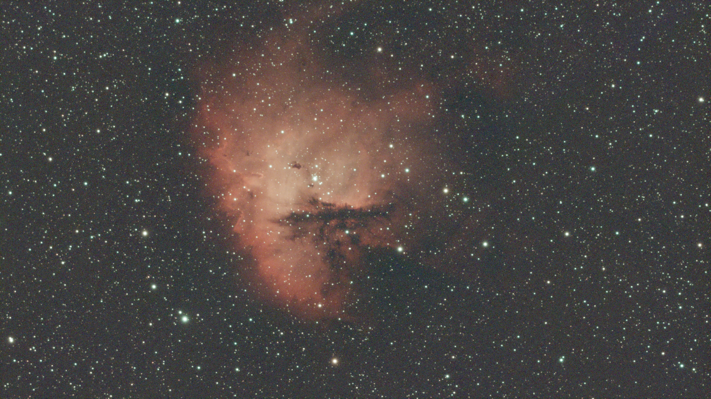
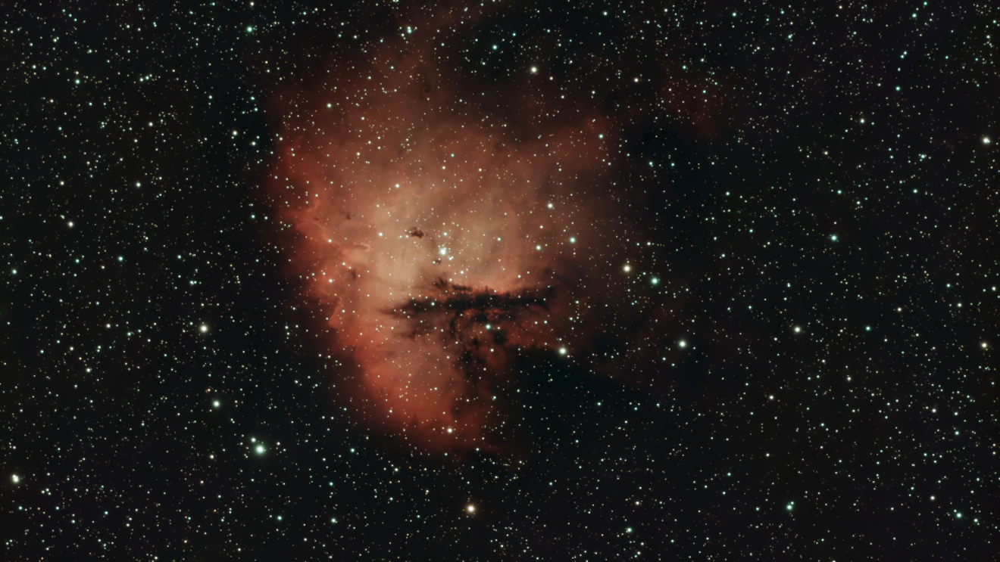
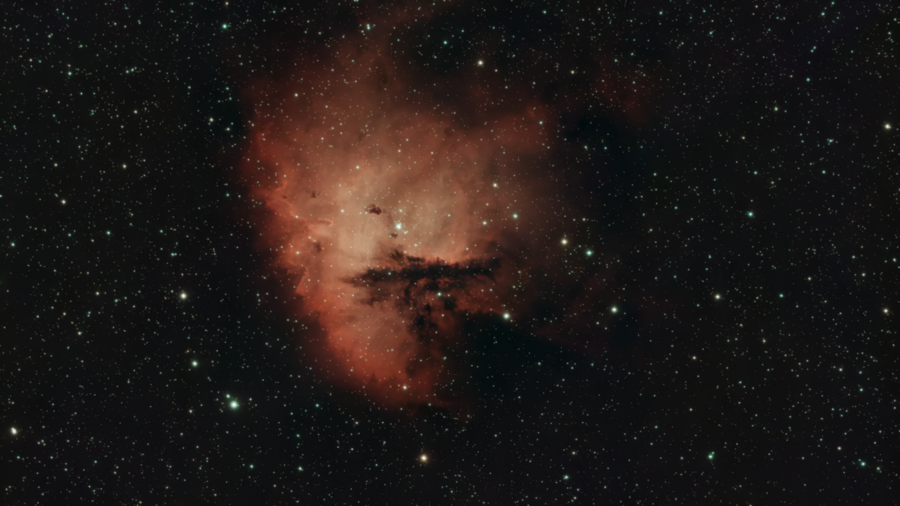

Workflow od razu po starcie
Wczytaj obraz, popraw tonalnosc, uruchom analize i zapisz wynik bez opuszczania aplikacji.
Desktopowa obróbka astrofotografii z opcjonalnymi narzędziami AI
Astro AI Processor łączy klasyczne narzędzia przetwarzania obrazu z analizą astronomiczną (FWHM/SNR), obsługą FITS, plate solvingiem, narzędziami do pracy z gwiazdami i odszumianiem.

Wczytaj obraz, popraw tonalnosc, uruchom analize i zapisz wynik bez opuszczania aplikacji.
Integracja z Astrometry.net, StarNet++, deepSNR i asystentem Altair (offline, GGUF).
Obsluga .fits, .tiff, .png, undo/redo, warstwy i historia krokow.
Astro AI Processor is a desktop application for processing and analyzing astrophotography images. It combines traditional image-processing tools with astronomy-specific analysis and AI-powered processing features.
Astro AI Processor to desktopowa aplikacja do obróbki i analizy astrofotografii, łącząca klasyczne narzędzia przetwarzania obrazu z narzędziami astronomicznymi i funkcjami AI.
Przesun suwak, aby porownac oryginalny obraz z obrazem po korekcji tla.

Przesun suwak, aby porownac obraz przed i po odszumianiu AI.


Sprawdz, jak funkcja Star Shrink zmniejsza gwiazdy i poprawia czytelnosc obiektu.


Przesun suwak, aby porownac oryginalny obraz z wersja 4×. Uzyj zoomu, aby zobaczyc piksele.

Graficzna os czasu projektu (z gory na dol).
Uruchomienie strony z filmem intro, porownaniem AI i przyciskami pobierania.
Miejsce na nastepny kamien milowy projektu Astro AI Processor.
Zobacz, jak wyglada finalna animacja wygenerowana narzedziem 3D FLY.
Pobierasz gotowa wersje Linux z Google Drive (folder z aplikacja i _internal).
Astro AI Processor supports Linux and Windows. The download link on this page currently provides a Linux build.
Tak. Wiekszosc narzedzi dziala lokalnie, a internet jest potrzebny tylko dla funkcji online, takich jak Astrometry.net i sprawdzanie aktualizacji.
Yes. Astro AI Processor supports FITS files (.fits, .fit, .fts), as well as PNG, JPG and TIFF images.
Tak. Na stronie i w aplikacji dostepne sa porownania Before/After, dzieki ktorym latwo oceniasz efekt odszumiania i innych narzedzi AI.
Nie jest to wymagane, ale karta graficzna mocno przyspiesza niektore operacje. Na samym CPU aplikacja tez dziala, tylko wolniej.
Sprawdzanie wersji odbywa sie przez update API. Po wykryciu nowego wydania pobierasz paczke i podmieniasz folder aplikacji.
Tak, aplikacja wspiera historie edycji z undo/redo, co pozwala bezpiecznie testowac rozne ustawienia obrobki.
Tak, Astro AI Processor integruje sie z Astrometry.net i pozwala wykonac plate solving bez recznego przepisywania danych.
Dokumentacje znajdziesz w plikach README oraz pod przyciskiem "Czytaj dokumentacje" na stronie startowej.
Tak. Funkcja 3D FLY pozwala wygenerowac finalna animacje na podstawie przygotowanego obrazu i zapisac wynik do pliku wideo.
Astro AI Processor is a desktop application for processing and analyzing astrophotography images, with traditional image tools, astronomy-specific analysis and optional AI-powered tools.
Yes. Astro AI Processor is desktop astrophotography image-processing software with astronomy-focused tools such as FITS support, star analysis and plate solving.
It can edit and analyze astrophotography images, process FITS files, measure star and image metrics, run plate solving, and use optional star-removal and denoising tools.
Yes. Optional AI tools include the deepSNR and StarNet++ integrations and the local Altair assistant. Astro Upscale is traditional, non-generative image resampling. Some tools require separately installed components or models.
Yes. Astro AI Processor can integrate with StarNet++ for star removal when the StarNet++ command-line tool is installed and configured.
Yes. The optional deepSNR integration provides astrophotography image denoising and requires the deepSNR command-line tool.
Astro AI Processor source code is licensed under GNU GPL v3, and this page links to a Linux build. Check the repository for current distribution and pricing details.
Astro AI Processor is a desktop astrophotography image processing application developed under the AstroPhotoSoft brand. Read more about the application or browse the product documentation.